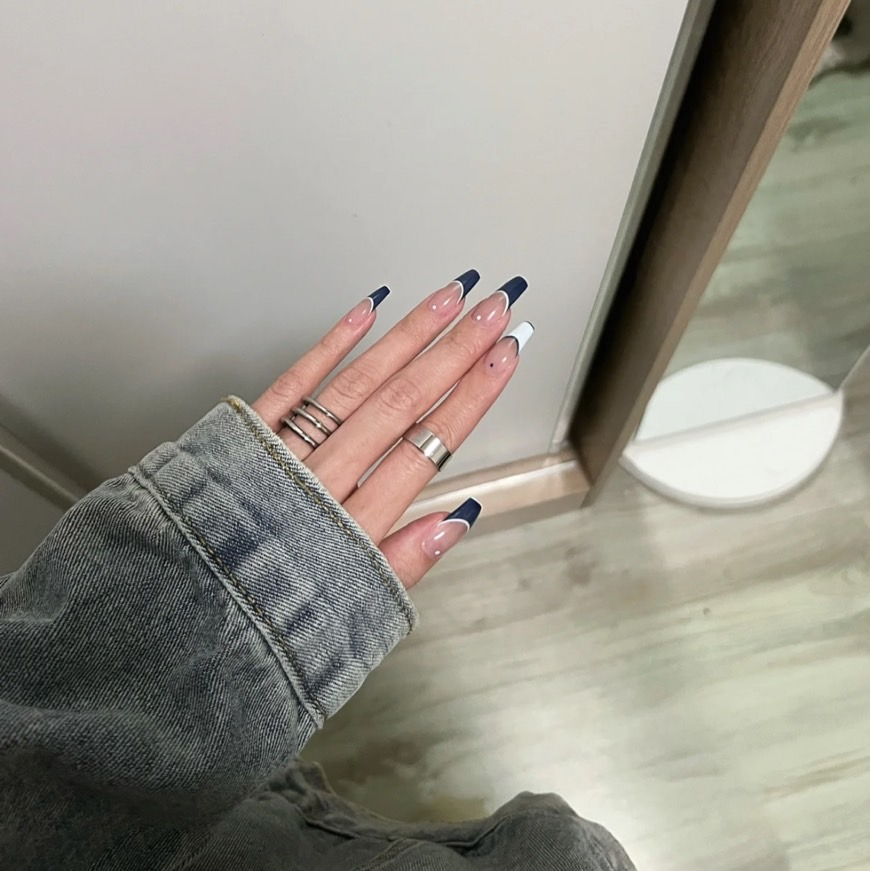

策展團隊介紹:
在天氣舒適的情況下，建議大家往大地色著手，黃黑白皮都不會彩雷! 2.灰太郎:武大狼的第250代子孫，第77代狼王，自稱“本大王”，灰太狼是小灰灰的父親，蕉太狼的二叔，紅太狼的丈夫，狼堡的主人，羊族的對手。他奉行狼族至上、弱肉強食，適者生存的原則，知識淵博，永遠想吃羊，曾發明製造出各種道具對付羊羊們，只是都沒有取得成功。灰太狼曾因多次違反草原和睦條例，被包包大人抓走。同時也是愛妻子、疼愛孩子的好丈夫、好爸爸。當家人遭遇危險或羊狼面對共同的危機時候，會極力和青青草原上的羊族合作去緩解危機拯救世界。

3.小灰灰是國產動漫《喜羊羊與灰太狼》系列裏的正面角色，是灰太狼和紅太狼的兒子，第78代狼王（詳見《我愛灰太狼2》）生活在青青草原之上，他心地善良，重情重義，好奇心強，活潑快樂，可愛無比，喜歡賣萌，與羊村的小羊們是好朋友。喜歡吃素，並十分崇拜自己的爸爸灰太狼，把他當做無所不能的神，他最喜歡看見自己的爸爸“飛”（實際上是打飛、擊飛）。他是灰太狼和紅太狼極其寵愛的孩子，後認懶羊羊為幹大哥。小灰灰性格很善良，不願意吃羊，容易被利用，總會幫助喜羊羊一行；很喜歡懶羊羊、喜羊羊、冰冰羊等人。